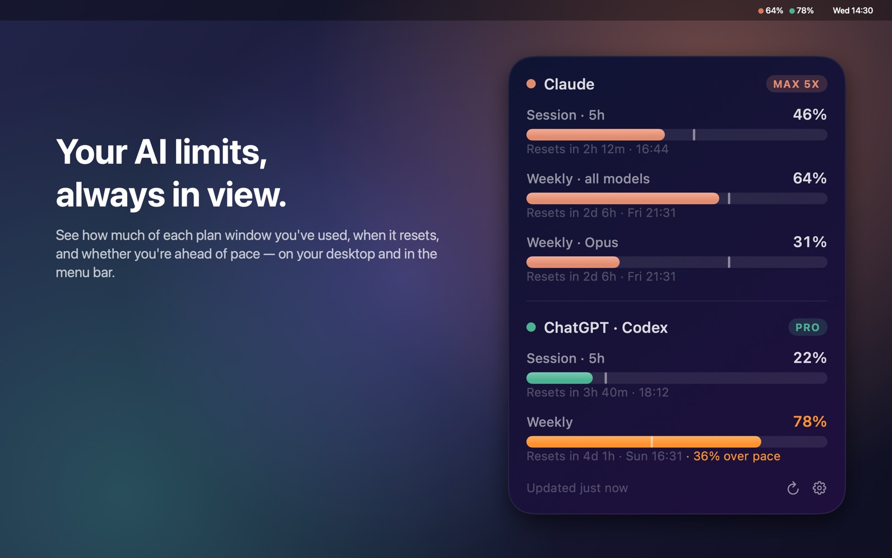

Your AI limits, always in view.
AI Limits is a Mac desktop widget and menu bar app. It shows how much of each AI plan window you've used, when it resets, and whether you're ahead of pace, so you don't get cut off mid-task.

What it shows
- Every limit window: the 5-hour session, weekly limits and model-specific limits, each with a countdown to its reset.
- Pace: a tick on each bar marks how much of the window has passed, so you can see when you're burning too fast.
- Menu bar readout: the fullest limit for each AI, always visible.
- Your choice of AIs and stats: one AI or several, in any order, in five themes.
Works with
- Claude Pro and Max plans
- ChatGPT Plus and Pro plans (Codex usage), through the Codex app's sign-in
You need your own subscription to each service you connect. Your sign-ins stay on your Mac. See the privacy policy.